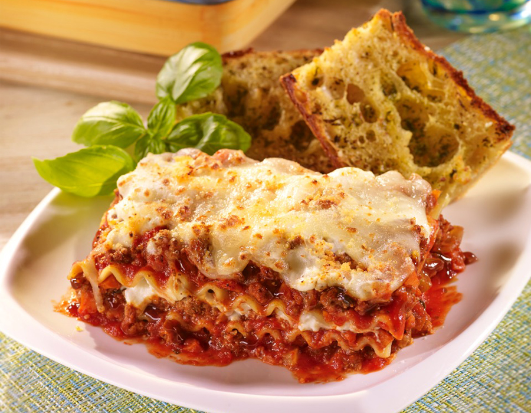

LASAGNA

Classic italian Lasagna with ricotta cheese, layered with
noodles, a hearty meat sauce and two different kinds of
cheese. A tasty comfort food recipe, this Lasagna is perfect
for a cold winter night or Sunday dinner with the family.
The term 'lagana', already in use in Roman times, referred to square- or rectangular-shaped thin
sheets obtained from a mixture of wheat flour, then baked or fire-cooked.
Ingredients:
- 1 1/2 lb. ground beef
- 1 lb. hot breakfast sausage
- 2 cloves garlic, minced
- 2 cans (14.5 ounce) whole tomatoes
- 2 cans (6 ounce) tomato paste
- 2 tbsp. dried parsley
- 2 tbsp. dried basil
- 2 1/2 tsp. salt
- 3 c. low fat cottage cheese
- 2 whole beaten eggs
- 1/2 c. grated (not shredded) Parmesan cheese
- 2 tbsp. dried parsley
- 1 tbsp. olive oil
- 1 package (10 ounce) lasagna noodles
- 1 lb. sliced mozzarella cheese
Steps:
- Bring a large pot of water to a boil.
- Meanwhile, in a large skillet or saucepan, combine ground beef, sausage, and garlic. Cook
over medium-high heat until browned. Drain half the fat; less if you’re feeling naughty.
- Add tomatoes, tomato paste, 2 tablespoons parsley, basil and 1 teaspoon salt.
- After adding the tomatoes, the sauce mixture should simmer for 45 minutes while you are
working on the other steps.
- In a medium bowl, mix cottage cheese, beaten eggs, grated Parmesan, 2 more tablespoons
parsley, and 1 more teaspoon salt. Stir together well. Set aside. Add 1/2 teaspoon salt and
the olive oil to the boiling water, then cook the lasagna noodles until 'al dente'
(not overly cooked). Drain.
- To assemble: Arrange 4 cooked lasagna noodles in the bottom of a baking pan, overlapping
if necessary. Spoon half the cottage cheese mixture over the noodles. Spread evenly. Cover
cottage cheese with a layer of mozzarella cheese. Spoon a little less than half the
meat/sauce mixture over the top. Repeat, ending with meat/sauce mixture. Sprinkle top
generously with extra Parmesan.
- Either freeze, refrigerate for up to two days, or bake immediately: 350-degree oven for 20
to 30 minutes, or until top is hot and bubbly.
Go back